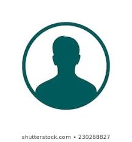

//Mouse Over and Mouse Out
<html>
<body>




<script>
function bigImg(x) {
    x.style.height = "120px";
    x.style.width = "120px";
}

function normalImg(x) {
    x.style.height = "32px";
    x.style.width = "32px";
}
</script>

</body>
</html>
